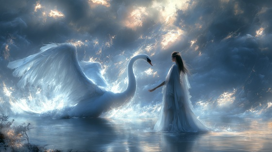

In Greek mythology, Leda was the queen of Sparta, famed for her beauty and grace. One evening, Zeus approached her in the form of a magnificent white swan. From their union (and, depending on the myth, from her husband Tyndareus as well), Leda gave birth to Helen of Troy, whose beauty would ignite the Trojan War, and the twins Castor and Pollux (the Dioscuri).
"White Swan" captures Leda’s confusion, awe, and helplessness—the collision of divine power and mortal fragility that planted the seeds of future catastrophe.
White Swan
I walked alone by twilight’s shore
Where silence kissed the river’s floor
And through the mist, the white wings came—
A ghost of sky, a whispered flame
No hunter’s snare, no mortal plea—
Could weave the net he cast on me
White swan, white lie, the feathered king
You stole my breath with broken wings
No prayer could pierce, no oath could hold—
The night you rained your stars of gold
He brushed my cheek, he touched my hair
The frozen world dissolved to air
And though his beak spoke not a word—
My soul unmade in flight was heard
He bound the earth, he bound the skies—
And left his weight in mortal eyes
White swan, white lie, the feathered king
You stole my breath with broken wings
No prayer could pierce, no oath could hold—
The night you rained your stars of gold
From broken wings and whispered cries—
Came seeds of flame the world denies
Helen rose with morning’s spear—
And gods would fall to hold her near
One night. One touch. A thousand wars.
White swan, white lie, the feathered king
You tore the sky and broke the spring
No prayer could pierce, no oath could hold—
The night I bore the world’s untold
In feathers torn, in dreams undone—
I cradle war beneath my sun